Кунджа у подножия Говардхана
Кунджа у подножия Говардхана
ПРОЕКТ ШРИ РУПА СЕВА КУНДЖИ
Шлокамрита
Шлоки, к которым
хочется возвращаться
Выберите шлоку, послушайте, как она звучит на санскрите, и разберите её слово за словом. Учите сами или вместе с преданными.
Сайт и приложение. Откройте Шлокамриту в браузере без установки или поставьте приложение, чтобы читать скачанные стихи без интернета.
- 302
- опубликованных стиха
- 310
- аудиозаписей
- 62
- общие подборки
ШЛОКА ДНЯ
Так стих выглядит в Шлокамрите
Это рабочий фрагмент приложения. Включайте переводы, наведите курсор на слово санскрита,нажмите на слово санскрита, послушайте запись или откройте слайд.
Бхагавад-гита 2.13
обладателя теладехино в этом’смин какйатха̄ в теледехе
детствокаума̄рам̇ юностьйауванам̇ старостьджара̄
так жетатха̄ другого тела обретениедеха̄нтара‑пра̄птир
стойко-разумныйдхӣрас при этомтатра нена обманываетсямухйати
Наведите курсор на слово санскрита: его значение подсветится в пословном переводе
Запись не загрузилась. Послушать на странице стиха
Знаете другие аудиозаписи этого стиха?
Предложить аудиозаписьЦветом выделены гуру — тяжёлые слоги, которые тянутся дольше
Открыть стих в ШлокамритеВСЁ, ЧТОБЫ ВЫУЧИТЬ ШЛОКУ
Возможности Шлокамриты
Выберите возможность в списке, чтобы увидеть её в приложении.Нажмите на возможность, чтобы открыть подробности и снимок.


Для вебинаров и занятий
Наведите курсор на слово санскрита, иНажмите на слово санскрита, и его значение загорится в пословном переводе. Удобно объяснять стих на вебинаре: слушатели видят, о каком слове речь.
Попробовать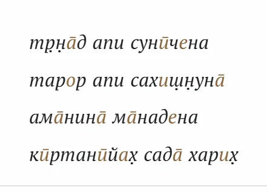
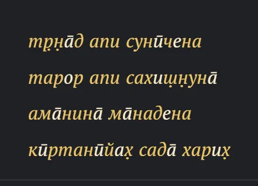
Тяжёлые слоги выделены цветом. Видно ритм стиха, легче читать нараспев.
Посмотреть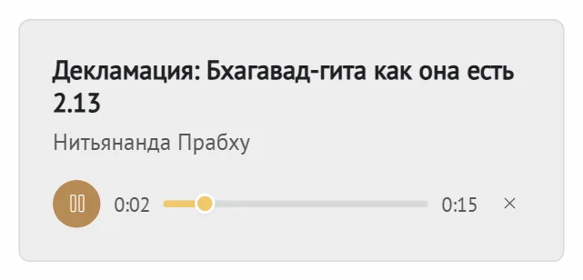

Рецитация преданных: слушайте стих и повторяйте за чтецом.
Послушать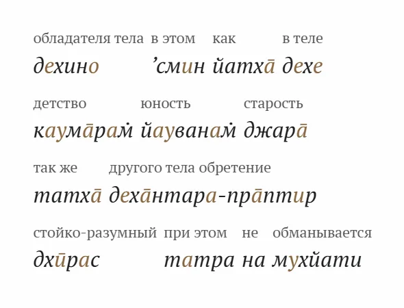

Значение каждого слова прямо над санскритом. Отключите его, чтобы проверить себя.
Включить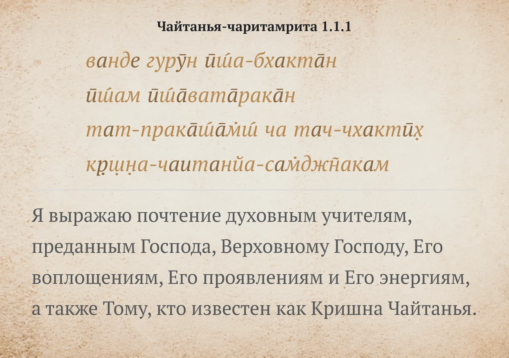
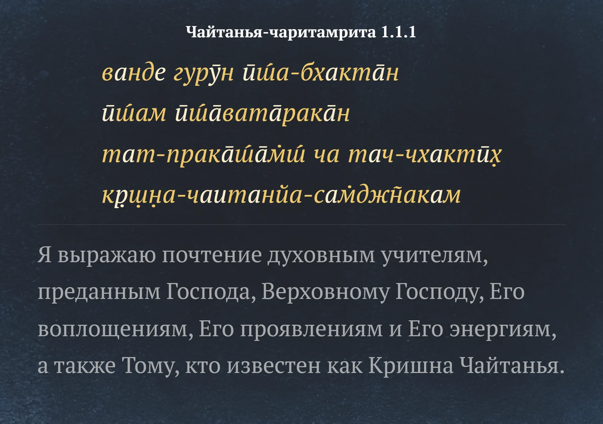
Для лекций
Стих на проекторе или общем экране. Выберите, что показать: санскрит, надстрочный, пословный или литературный перевод, и разверните слайд на весь экран.
Открыть слайд
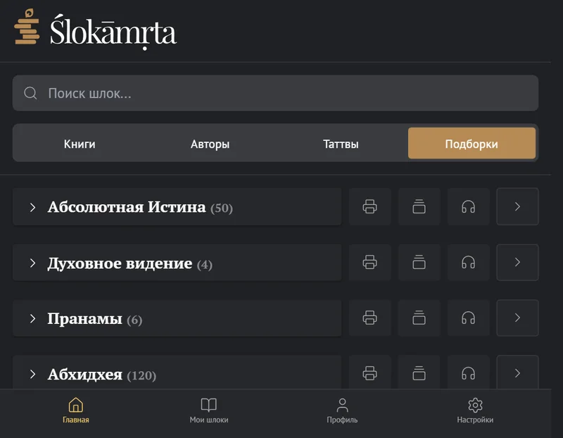
Стихи по темам: от «Абсолютной Истины» до пранам. Печать, слайды и аудио всей подборки.
Все подборки
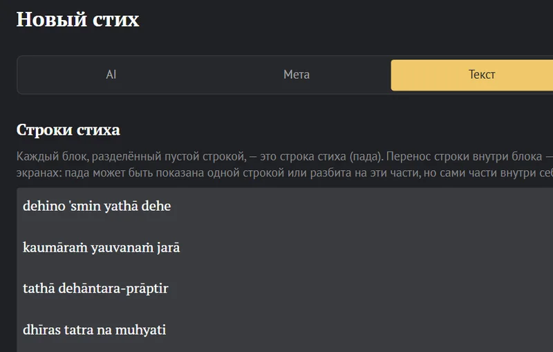
Добавляйте стихи из общих разделов в свои подборки или вносите собственную шлоку.
Подробнее
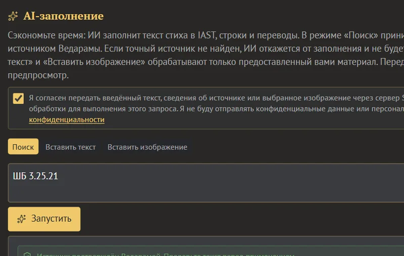
Если стих есть в Ведараме, ИИ перенесёт его и заполнит поля. Вы проверяете текст перед сохранением.
Как это работает


СОВМЕСТНОЕ ИЗУЧЕНИЕ
Шлоки в кругу преданных
В каждой группе преданные вместе читают шлоки, слушают рецитацию и обсуждают смысл стихов.
Всегда делясь друг с другом знанием и беседуя обо Мне, они испытывают огромное удовлетворение и блаженство.
Из перевода Шрилы Прабхупады
МОИ ШЛОКИ
Свои шлоки и подборки
Готовите встречу или занятие? Соберите нужные стихи в свою подборку.
Возьмите стих из общих разделов
Или внесите свою шлоку: строки, надстрочный и пословный перевод, источник.
Доверьте рутину ИИ
Если стих есть в Ведараме, ИИ быстро перенесёт текст и заполнит поля. Перед сохранением вы проверяете результат.
Покажите подборку
Откройте её как слайд-шоу на встрече или повторяйте стихи в приложении.


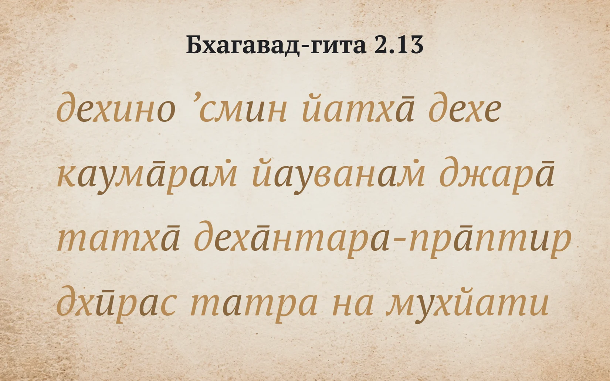
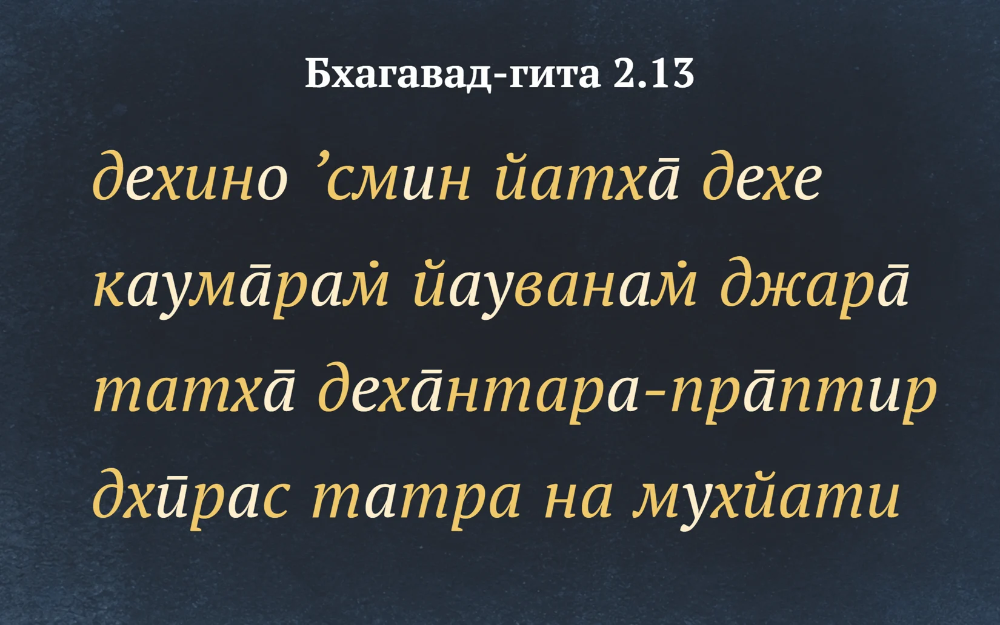
ДЛЯ ЛЕКЦИЙ И СОВМЕСТНОГО ЧТЕНИЯ
Покажите стих на экране
Откройте слайд-шоу из раздела книги и выведите его на проектор или общий экран. Оставьте только санскрит для рецитации или включите переводы для разбора. Наведите курсор на слово, и все увидят его значение.
ПРИЛОЖЕНИЕ ДЛЯ ANDROID И IPHONE
Шлокамрита на телефоне
Главное отличие приложения от веб-версии — офлайн-режим. Скачайте стихи и подборки и открывайте их без интернета: в дороге, на парикраме или там, где нет связи.

БЛОГ ШЛОКАМРИТЫ
Статьи о шлоках и практике
Разборы стихов, советы по заучиванию и новости проекта.
Все статьи
О ПРОЕКТЕ
Ślokāmṛta
Это приложение — часть цифрового пространства Шри Рупа Сева Кунджи. Оно призвано помочь вайшнавам, которые изучают и заучивают шлоки из священных писаний.
Уже сейчас есть выверенные переводы (в том числе пословные и надстрочные) и красивая рецитация. Постепенно будем добавлять лекции по этим шлокам и другие дополнительные функции.


Шри Рупа Сева Кунджа
Центр образования и служения у подножия Говардхана. Сокровенное пространство, созданное для полного погружения в духовную жизнь.
Команда
- Ачинтья Кришна дасРуководитель проекта
- Сварупананда дасСпонсор, Проектный менеджер
- Анантаджит дасКопирайтер, Специалист по санскриту
- Шридама дасКопирайтер
- Нарада дасРазработчик
ЧИТАТЬ, ПЕТЬ, УЗНАВАТЬ ВРАДЖ
Другие проекты ШРСК


ВАШ ПЕРВЫЙ ШАГ
Начните с одного стиха
Откройте веб-приложение в браузере или установите Шлокамриту на телефон.